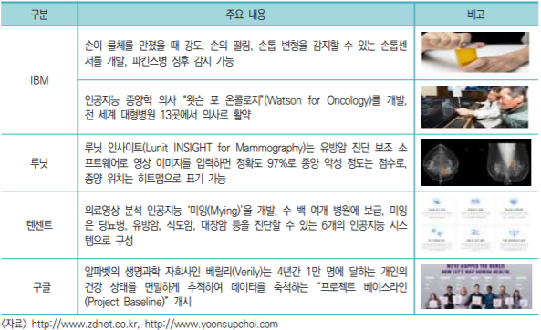

의료 및 헬스케어
최근 인공지능 기술을 이용하여 성조숙증, 폐암, 폐질환, 유방암, 치매, 물리치료 등 질환을 정확하고 빠르게 진단하거나 효과적으로 치료가 가능한 보조 소프트웨어들이 속속 등장하고 있는데, 이는 인공지능이 최신논문, 과거 진료정보, 학술지 등의 정보를 스스로 학습하여 의사가 최적의 처방을 내리도록 보조하는 역할을 수행할 수 있기 때문이다. 이러한 인공지능 소프트웨어를 사용하면 정확도는 높이면서 진단하는데 들어가는 시간과 비용은 현저히 줄일 수 있으며, 개인에 최적화된 맞춤형 케어를 받을 수 있어 인공지능을 활용한 의료 및 헬스케어 적용 가치는 점점 증대되고 있다. MAM(Marketsandmarkets, 2016) 보고서에 따르면, 2015년 7억 1,300만 달러였던 인공지능 헬스케어 세계 시장규모는 2020년에는 75억 4,700만 달러로 크게 성장할 것으로 예상된다. 그리고 국내 인공지능 헬스케어 시장은 17억 원(2015년)에서 256억 원(2020년)으로 증가하는 등 글로벌 시장의 연평균 성장률인 40%보다 높은 70.4%를 상회할 것으로 전망되고 있다. 이처럼 인공지능 기술의 발달과 더불어 의료 및 헬스케어 산업에 혁신적이고 새로운 서비스가 보다 많이 창출될 것으로 예상되고 있다
